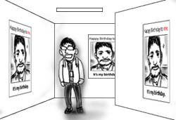

朝出社すると，マネージャのPaulが神妙な顔でオフィスにやってきました．
何かなと思って身構えていると，Paulは「昨日，妻がこれ買ったんだけど，日本語だから読めなくてね」と袋を差し出して来ました．
という訳で僕は，朝から「ひとくちだんごの作り方」を翻訳しているのです．カリフォルニアで．
朝出社すると，マネージャのPaulが神妙な顔でオフィスにやってきました．
何かなと思って身構えていると，Paulは「昨日，妻がこれ買ったんだけど，日本語だから読めなくてね」と袋を差し出して来ました．
という訳で僕は，朝から「ひとくちだんごの作り方」を翻訳しているのです．カリフォルニアで．
出社してエレベータを降りると，見覚えの無い張り紙が目に留まりました．
満面の笑みを浮かべた男の顔のアップに「It's my birthday. Happy Birthday to me.」というキャプション．すごいアピールの仕方だなぁと思ってエレベータホールからオフィスへ入ると．
壁と言う壁，扉と言う扉にそのポスターが貼られまくってました．同僚の一人はフロアを歩き回ってポスターを発見する度に，指差してゲラゲラ笑ってます．
9時半にはほとんど剥がされていたので，早起きはするものだと思いました．
ミーティングがあったので会議室まで行ったのですが，開始時間だというのにまだ誰も来ていません．
会議室の扉はナンバーロックで施錠されているし，どうしたものかなぁとしばらくぼんやりしていると，向こうからマネージャのPaulがやって来ました．「あれ，そこに鍵の番号書いてない？」と会議室向かいの消火栓を指差します．「えーこんなところに？」と思いながら消火栓扉を開くと，確かにそこに数字らしき羅列が彫ってありました．
こんなところに堂々と書いておいていいのだろうかと思いながら，その数字を使って会議室の扉を開け，ミーティングを始めたのですが…．何か心に違和感が．なんだろう，何がひっかかっているのだろうとしばらく考えた結果，その違和感の理由に思い当たりました．
鍵の番号，漢数字だ．
ものすごいセキュリティです．